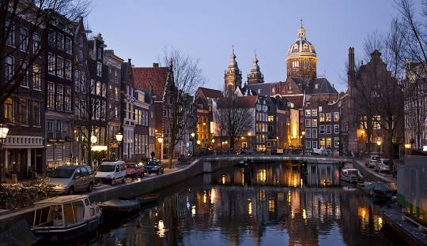
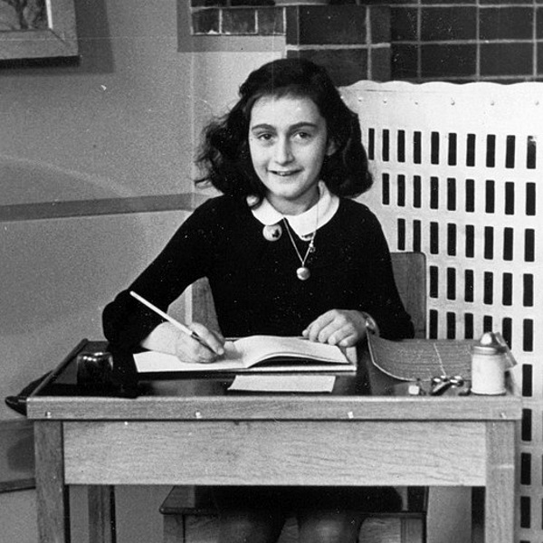
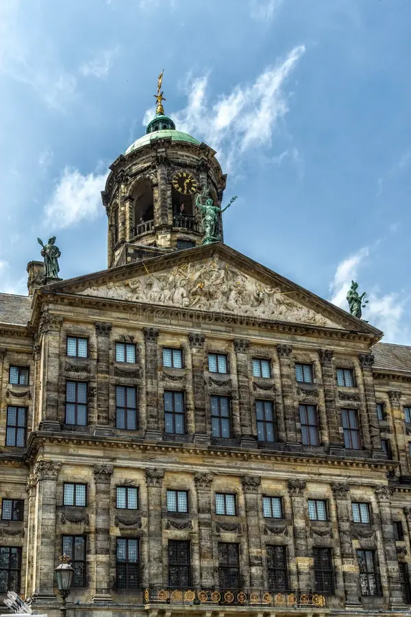
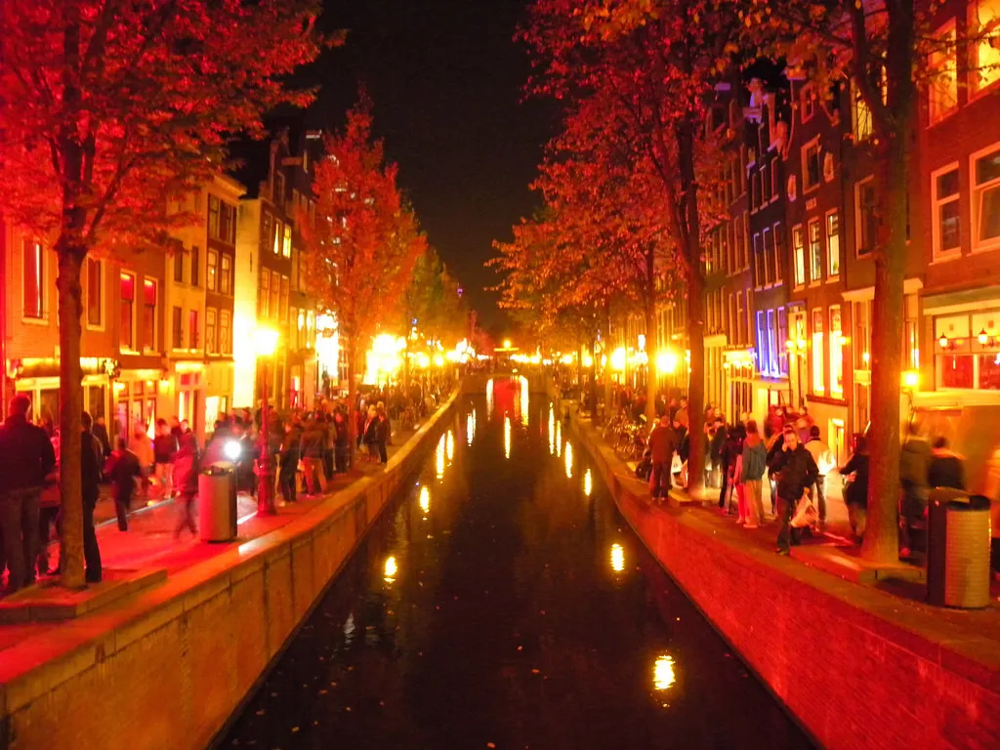
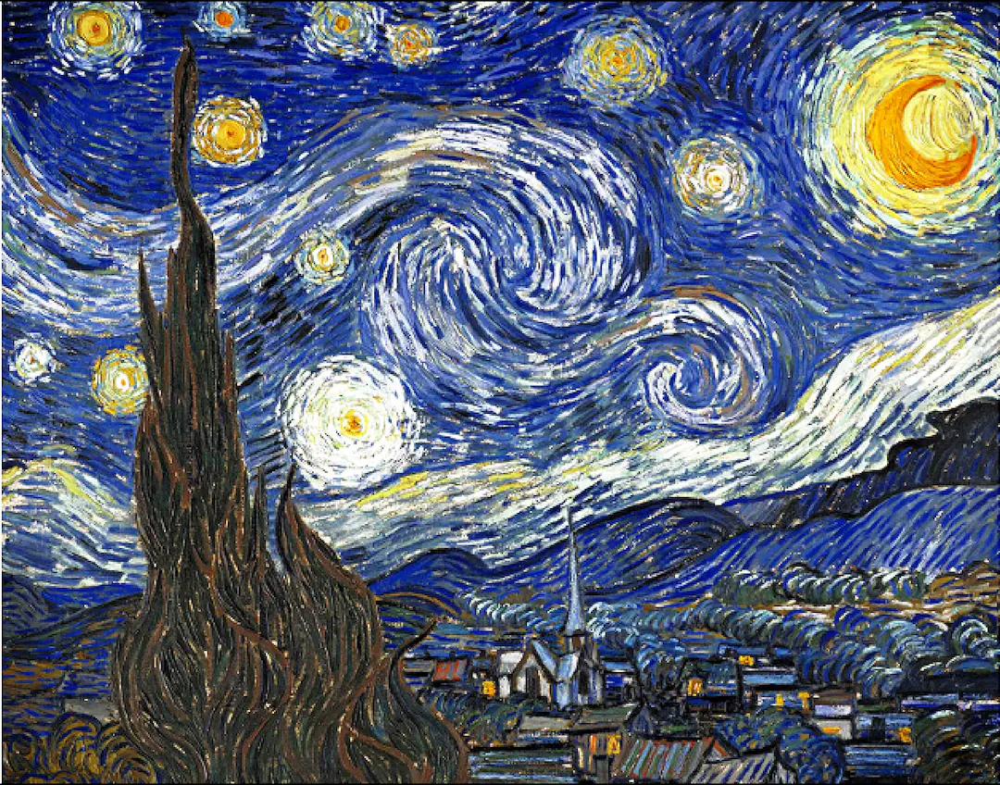

Amsterdam położony jest nad rzekami Amstel i IJ oraz licznymi kanałami (160) – trzy największe w kształcie półksiężyców usytuowane niemalże równolegle do siebie to: Herengracht (położony najbardziej centralnie), Keizersgracht i Prinsengracht. Z nimi łączą się promieniście mniejsze kanały, tworząc sieć wodną dzielącą miasto na liczne wyspy, dlatego Amsterdam nazywany jest często Wenecją Północy. Amsterdam położony jest częściowo poniżej poziomu morza. Jest największym miastem Holandii, dużym ośrodkiem przemysłowym, drugim po Rotterdamie portem handlowym Holandii (dostępnym dla statków oceanicznych), połączonym kanałami z Morzem Północnym i Renem. Ważny ośrodek naukowy (2 uniwersytety, Królewski Instytut Tropikalny) i kulturalny; jest też ważnym ośrodkiem turystycznym z licznymi muzeami (m.in. Rijksmuseum, Muzeum Vincenta van Gogha, Rembrandthuis, Muzeum Tropiku); zabytkami i bogatymi ogrodami botanicznymi. Centrum miasta wraz z kanałami powstało w przeważającej części w XVII wieku (złoty wiek w historii Holandii)

Dom Anne Frank – muzeum w Amsterdamie poświęcone Anne Frank, autorce Dziennika Anne Frank, która wraz z rodziną i czwórką znajomych ukrywała się w pokojach na tyłach budynku przed nazistowskimi prześladowaniami podczas II wojny światowej.

Pałac królewski w Amsterdamie (dawniej Ratusz) – budynek położony w centrum Amsterdamu, pełnił funkcję ratusza do 1808, kiedy został przebudowany na pałac królewski, w całej Holandii są tylko cztery takie pałace. Jest uznawany za najważniejszy zabytek holenderskiego Złotego Wieku.

De Wallen – największa i najbardziej znana dzielnica czerwonych latarni Amsterdamu, położona w północno-wschodniej, najstarszej części miasta. Jest jednym z jego najpopularniejszych miejsc turystycznych. Słynie głównie ze swojego rozrywkowego charakteru: coffee shopów, pubów i restauracji. W De Wallen znajduje się także gotycki kościół Oude Kerk – najstarszy kościół Amsterdamu.

Van Gogh Museum – muzeum w Amsterdamie (Holandia) poświęcone sztuce Vincenta van Gogha i czasom, w których żył. Aktualnie znajduje się tam ponad 200 obrazów mistrza, 500 jego rysunków i 700 listów; jest to największa taka kolekcja na świecie. Oprócz tego zgromadzono tam wiele innych związanych z nim pamiątek, m.in. fotografii i rzeczy osobistych. W muzeum podziwiać można także inne dzieła sztuki – prace przyjaciół malarza: m.in. Paula Gauguina, Toulouse-Lautreca oraz artystów, których van Gogh podziwiał, jak Léon Lhermitte i Jean-François Millet, organizowane są wystawy sztuki dziewiętnastowiecznej. Najstarsze eksponaty pochodzą z 1840, najmłodsze z roku 1920.